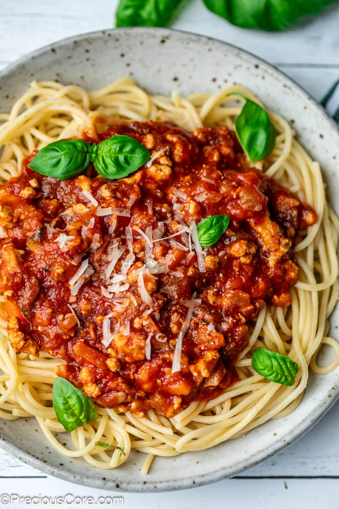

Spaghetti Bolognese

Description
Spaghetti Bolognese is one of the most beloved Italian pasta dishes, known for its rich and hearty meat sauce.
The slow-simmered tomato and beef mixture creates a flavorful base that clings perfectly to strands of spaghetti.
With a blend of garlic, onion, and herbs, this recipe is simple enough for a weeknight dinner but special enough
to serve to guests. It’s comfort food at its best—warm, filling, and delicious.
Ingredients
- 200g spaghetti pasta
- 250g ground beef
- 1 onion, chopped
- 2 cloves garlic, minced
- 1 can (400g) diced tomatoes
- 2 tbsp olive oil
- 1 tsp dried oregano
- Salt and pepper, to taste
- Grated Parmesan cheese (optional)
Steps
- Boil a pot of water, add salt, and cook spaghetti according to package instructions.
- Heat olive oil in a pan and sauté onions and garlic until fragrant.
- Add ground beef, cook until browned.
- Stir in diced tomatoes, oregano, salt, and pepper. Simmer for 15–20 minutes.
- Drain pasta and serve topped with the sauce.
- Garnish with Parmesan cheese if desired.
Back to recipes